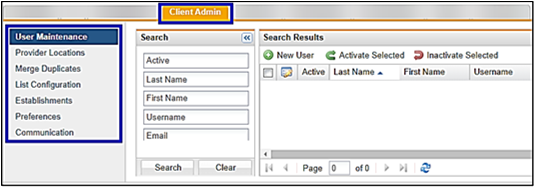

There are several features under the Client Admin tab.

User Maintenance: User Maintenance option allows the Client Admin user to set up user profiles which include Username and access permissions. Access is granted to Providers, Clinicians, Event/Flu Crew, Help Desk staff, Recruiter/HR.
Provider Locations: The Provider Locations area allows the Client Admin to manage clinic locations, clinicians that work at these locations, and manage tests/services that are provided by each clinic location. The Provider Locations feature has three tabs:
Merge Duplicates: Merge Duplicates option allows the Client Admin user to correct duplicate demographic records.
List Configuration: List Configuration option allows the Client Admin user to edit specific dropdown lists used throughout the software.
Establishments: Establishments option (only available if purchased Injury, Illness, Exposure module) allows the Client Admin user to enter all establishments used for OSHA logs.
Communication Setup: The Communication Setup allows the Client Admin user to create and manage email templates.
Preferences: Preferences allows the Client Admin user to view client-specific preferences.